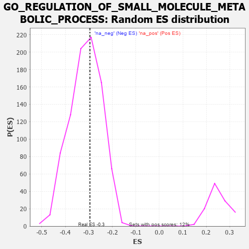

| | | Dataset | 7d |
| Phenotype | NoPhenotypeAvailable |
| Upregulated in class | na_neg |
| GeneSet | GO_REGULATION_OF_SMALL_MOLECULE_METABOLIC_PROCESS |
| Enrichment Score (ES) | -0.2953208 |
| Normalized Enrichment Score (NES) | -0.9404391 |
| Nominal p-value | 0.5927602 |
| FDR q-value | 0.91776466 |
| FWER p-Value | 1.0 |
Table: GSEA Results Summary
 Fig 1: Enrichment plot: GO_REGULATION_OF_SMALL_MOLECULE_METABOLIC_PROCESS
Fig 1: Enrichment plot: GO_REGULATION_OF_SMALL_MOLECULE_METABOLIC_PROCESS
Profile of the Running ES Score & Positions of GeneSet Members on the Rank Ordered List
| PROBE | GENE SYMBOL | GENE_TITLE | RANK IN GENE LIST | RANK METRIC SCORE | RUNNING ES | CORE ENRICHMENT | | 1 | IRS1 | | | 98 | 1.659 | 0.0259 | No |
| 2 | NUP85 | | | 329 | 0.772 | 0.0146 | No |
| 3 | GSK3A | | | 351 | 0.745 | 0.0292 | No |
| 4 | ARNT | | | 357 | 0.741 | 0.0457 | No |
| 5 | NUP54 | | | 505 | 0.627 | 0.0416 | No |
| 6 | RAE1 | | | 827 | 0.524 | 0.0130 | No |
| 7 | AKT1 | | | 1040 | 0.476 | -0.0029 | No |
| 8 | FOXK2 | | | 1081 | 0.467 | 0.0028 | No |
| 9 | NUP93 | | | 1127 | 0.459 | 0.0077 | No |
| 10 | SRC | | | 1128 | 0.459 | 0.0183 | No |
| 11 | PSMD7 | | | 1152 | 0.454 | 0.0259 | No |
| 12 | NUP43 | | | 1160 | 0.453 | 0.0355 | No |
| 13 | PSMD2 | | | 1181 | 0.450 | 0.0433 | No |
| 14 | P2RY1 | | | 1416 | 0.407 | 0.0231 | No |
| 15 | NUP88 | | | 1429 | 0.404 | 0.0309 | No |
| 16 | GPT | | | 1488 | 0.392 | 0.0326 | No |
| 17 | IDI1 | | | 1513 | 0.389 | 0.0386 | No |
| 18 | NFYB | | | 1543 | 0.384 | 0.0438 | No |
| 19 | NFYC | | | 1582 | 0.377 | 0.0477 | No |
| 20 | DDB1 | | | 1642 | 0.366 | 0.0487 | No |
| 21 | NUP58 | | | 1787 | 0.340 | 0.0383 | No |
| 22 | PSMD4 | | | 1811 | 0.335 | 0.0431 | No |
| 23 | PSMD6 | | | 1858 | 0.326 | 0.0448 | No |
| 24 | FOXK1 | | | 1859 | 0.326 | 0.0523 | No |
| 25 | NUP62 | | | 1871 | 0.324 | 0.0584 | No |
| 26 | PSME4 | | | 2143 | 0.285 | 0.0306 | No |
| 27 | PSMF1 | | | 2251 | 0.268 | 0.0233 | No |
| 28 | GNMT | | | 2261 | 0.266 | 0.0283 | No |
| 29 | REST | | | 2308 | 0.259 | 0.0284 | No |
| 30 | SEC13 | | | 2330 | 0.256 | 0.0317 | No |
| 31 | KAT2B | | | 2502 | 0.226 | 0.0152 | No |
| 32 | PSMD5 | | | 2560 | 0.218 | 0.0130 | No |
| 33 | NUP50 | | | 2625 | 0.209 | 0.0098 | No |
| 34 | RORA | | | 2730 | 0.193 | 0.0010 | No |
| 35 | ARV1 | | | 2827 | 0.179 | -0.0070 | No |
| 36 | WDTC1 | | | 2865 | 0.172 | -0.0077 | No |
| 37 | WDR5 | | | 2892 | 0.168 | -0.0071 | No |
| 38 | PPTC7 | | | 2906 | 0.164 | -0.0050 | No |
| 39 | TAZ | | | 2933 | 0.161 | -0.0045 | No |
| 40 | WNT4 | | | 3023 | 0.146 | -0.0125 | No |
| 41 | MAEA | | | 3048 | 0.143 | -0.0122 | No |
| 42 | TIGAR | | | 3091 | 0.138 | -0.0143 | No |
| 43 | COQ3 | | | 3132 | 0.133 | -0.0163 | No |
| 44 | PSMD9 | | | 3179 | 0.125 | -0.0193 | No |
| 45 | COX11 | | | 3256 | 0.113 | -0.0263 | No |
| 46 | NUP98 | | | 3261 | 0.112 | -0.0242 | No |
| 47 | LCMT1 | | | 3576 | 0.063 | -0.0626 | No |
| 48 | ABCD1 | | | 3677 | 0.047 | -0.0742 | No |
| 49 | DGKQ | | | 3856 | 0.020 | -0.0963 | No |
| 50 | NCOR1 | | | 3961 | 0.000 | -0.1095 | No |
| 51 | PARP1 | | | 4014 | -0.010 | -0.1158 | No |
| 52 | PDP2 | | | 4098 | -0.023 | -0.1258 | No |
| 53 | MTOR | | | 4114 | -0.025 | -0.1272 | No |
| 54 | NFYA | | | 4140 | -0.031 | -0.1296 | No |
| 55 | GFI1 | | | 4168 | -0.037 | -0.1322 | No |
| 56 | PSME3 | | | 4280 | -0.056 | -0.1450 | No |
| 57 | RAN | | | 4299 | -0.059 | -0.1459 | No |
| 58 | ACADL | | | 4360 | -0.069 | -0.1519 | No |
| 59 | CLK2 | | | 4628 | -0.124 | -0.1829 | No |
| 60 | EP300 | | | 4941 | -0.186 | -0.2181 | No |
| 61 | FLCN | | | 5140 | -0.235 | -0.2378 | No |
| 62 | CLCN2 | | | 5224 | -0.250 | -0.2425 | No |
| 63 | CPT1A | | | 5467 | -0.311 | -0.2660 | No |
| 64 | ACTN3 | | | 5486 | -0.315 | -0.2610 | No |
| 65 | VDR | | | 5517 | -0.325 | -0.2573 | No |
| 66 | CLYBL | | | 5619 | -0.350 | -0.2620 | No |
| 67 | PSMD1 | | | 5674 | -0.367 | -0.2604 | No |
| 68 | ABCG1 | | | 5778 | -0.399 | -0.2642 | No |
| 69 | PMVK | | | 5792 | -0.403 | -0.2566 | No |
| 70 | SCAP | | | 5986 | -0.466 | -0.2703 | No |
| 71 | EGR1 | | | 6165 | -0.527 | -0.2806 | Yes |
| 72 | INSR | | | 6204 | -0.538 | -0.2730 | Yes |
| 73 | RGN | | | 6233 | -0.547 | -0.2639 | Yes |
| 74 | ACMSD | | | 6367 | -0.603 | -0.2668 | Yes |
| 75 | PLIN5 | | | 6524 | -0.672 | -0.2711 | Yes |
| 76 | DYRK2 | | | 6533 | -0.677 | -0.2564 | Yes |
| 77 | CLN3 | | | 6580 | -0.699 | -0.2461 | Yes |
| 78 | TPR | | | 6597 | -0.709 | -0.2317 | Yes |
| 79 | GSK3B | | | 6719 | -0.768 | -0.2293 | Yes |
| 80 | PTH1R | | | 6845 | -0.839 | -0.2257 | Yes |
| 81 | GHSR | | | 6937 | -0.894 | -0.2166 | Yes |
| 82 | PIBF1 | | | 7049 | -0.966 | -0.2083 | Yes |
| 83 | PANK2 | | | 7736 | -1.866 | -0.2521 | Yes |
| 84 | SP1 | | | 7840 | -2.321 | -0.2115 | Yes |
| 85 | PSMD3 | | | 7907 | -2.887 | -0.1531 | Yes |
| 86 | PSMD8 | | | 7931 | -3.286 | -0.0800 | Yes |
| 87 | PASK | | | 7946 | -3.674 | 0.0032 | Yes |
Table: GSEA details [plain text format]

Fig 2: GO_REGULATION_OF_SMALL_MOLECULE_METABOLIC_PROCESS: Random ES distribution
Gene set null distribution of ES for GO_REGULATION_OF_SMALL_MOLECULE_METABOLIC_PROCESS